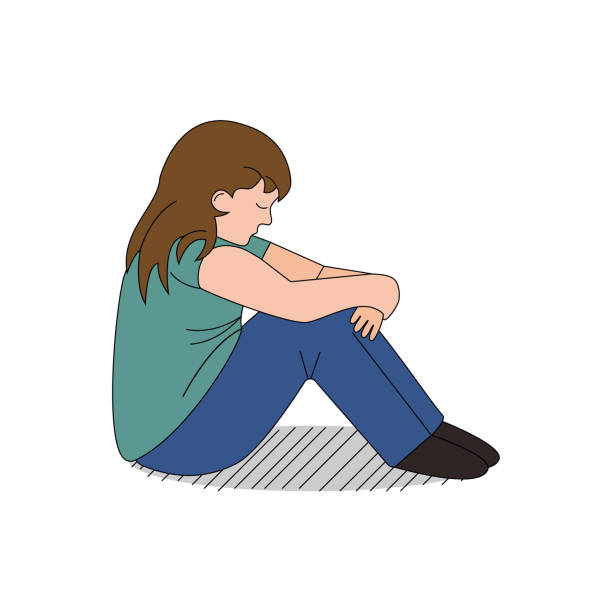

<div class="msg_container">

    
    <!-- Exit channel button -->
    <button (click)="exit_channel($event)" *ngIf="current_channel" class="btn btn-primary exit_channel_btn">Exit channel 🚪</button>
    
    <!-- If user doesn't belong to any channels -->
    <div class='no_channels' *ngIf="channels && channels.length == 0">
        <h1>You don't belong to any channels</h1>
        
    </div>
    
    <!-- Available channels for user to open -->
    <div *ngIf="!current_channel"  class='ch_contain'>
    <div class='channel_card' *ngFor="let c of channels" (click)="select_channel($event, c.channel_name)">
            <h3>{{c.channel_name}}</h3>
            <h1 class="card_emoji_text">🚪🚶</h1>
        </div>
    </div>


    <!-- If channel selected -->
    <div *ngIf="current_channel">
        
        <!-- Loading -->
        <div *ngIf="!this.messages && current_channel">
            <h1>Loading</h1>
        </div>
        
        <!-- If no messages in channel -->
        <div *ngIf="this.messages && this.messages.length == 0">
            <h1>No messages have been sent in this channel</h1>
        </div>
        
        <!-- For each message -->
        <div *ngFor="let msg of this.messages">
            <div>{{msg}}</div>
        </div>
        
    </div>

</div>